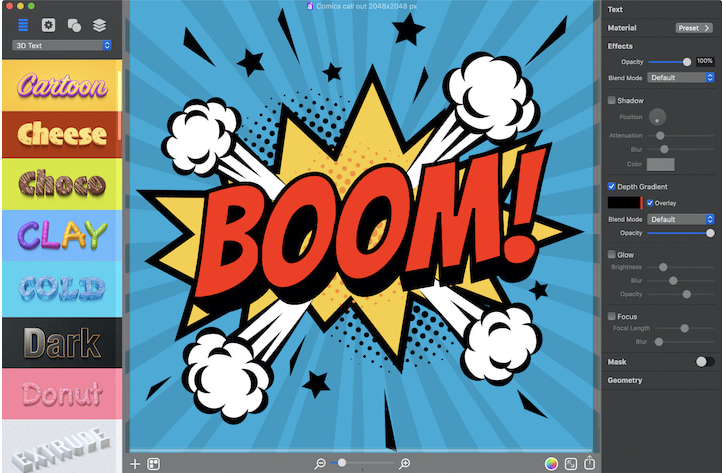

The art of creating and organizing type is known as typography. Typographers use a variety of fonts, spacing, widths, and sharpness to make the text more readable, orderly, and pleasant to read.
Typography has a lot of power. The field, however, isn’t and shouldn’t be limited to designers. Writers would also benefit from studying and employing typography. Why?
It influences not just what we read but also how we read.
Many graphic design apps can help create beautiful typography. Art Text stands out among these apps by having its prime purpose to assist users in creating highly influential typography for their content. With Art Text, users can apply text effect presets to their headings and titles, or design their typography graphics from scratch, including 3D typography.
As a graphic designer, understanding typography is essential for creating impactful designs across various media, including print, web, and digital platforms.
By mastering the principles of typography, graphic designers can enhance the clarity, impact, and aesthetic appeal of their designs, effectively communicating with their target audience.
Home